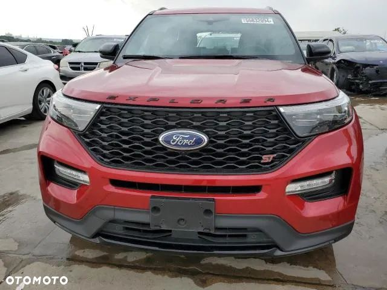
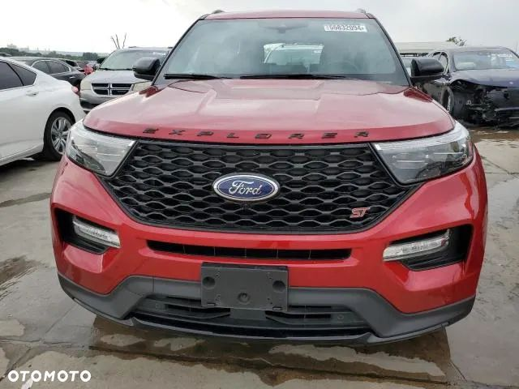
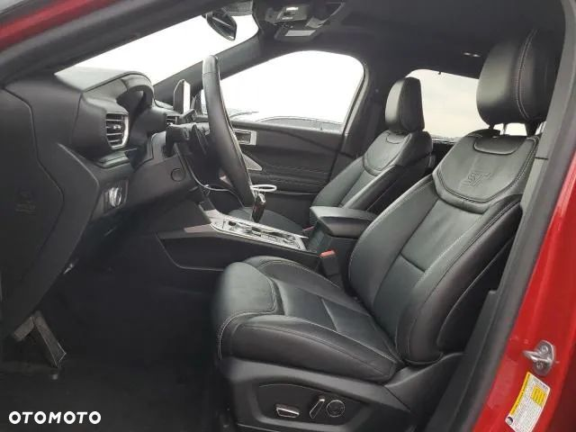
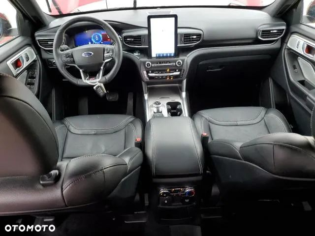
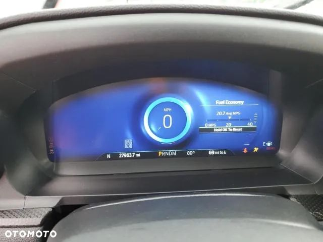
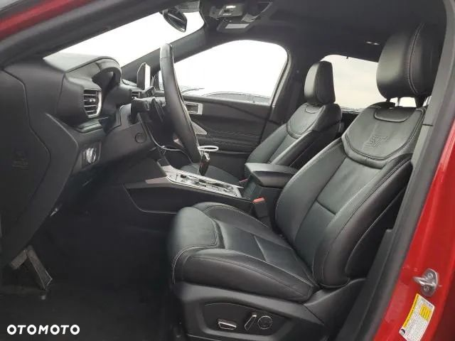
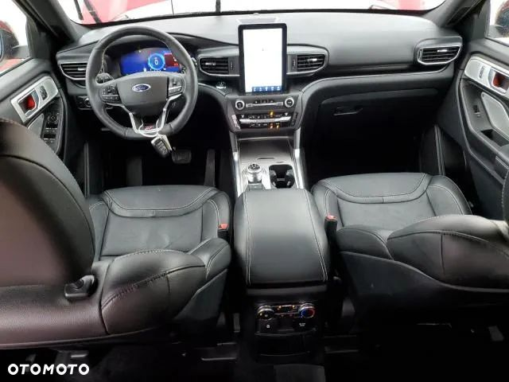
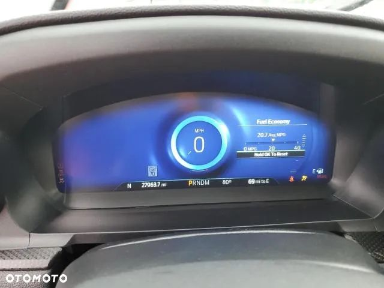

--- ZAKUP AUTA NAWET DO 40% TANIEJ NIŻ W EUROPIE, AUTA CAŁE I USZKODZONE --- WADOWSCY4IMPORT – importujemy samochody z USA i Kanady pod zamówienie Klienta od 2008 roku. USŁUGA PROFESJONALNA I KOMPLEKSOWA OD POCZATKU DO KOŃCA IMPORTU! Auto znajduje się obecnie w Stanach Zjednoczonych i oczekuje na datę licytacji. Ford Explorer ST Rok produkcji: sierpień 2020 Stan techniczny: Pojazd pali i jeździ Silnik: 3.0 V6 400 km Samochód wyróżnia się bardzo bogatym wyposażeniem. Dach panoramiczny, wysoce zaawansowana obsługa infotainment, manetki zmiany biegów, tapicerka skórzana najwyższej jakości, podgrzewane oraz w pełni regulowane elektrycznie fotele przednie to tylko niektóre atuty tego auta. Niska akcyza oraz koszt naprawy! - Odpowiadamy za cały import pojazdu do Polski - Opłacamy wszystkie opłaty importowe (cło, akcyza, VAT) - Dokonujemy zakupu pojazdu na firmę Wadowscy SP. Z O.O. - Samochód zostaje sprzedany klientowi w momencie przybycia pojazdu do Polski za ustaloną kwotę brutto na pełną fakturę VAT 23% - Państwo nie muszą zajmować się dokonywaniem niepewnych przelewów zagranicznych. To my zajmujemy się tymi formalnościami, a także jesteśmy za to w pełni odpowiedzialni. - Na życzenie, jesteśmy w stanie przetransportować pojazd do miejsca na terenie całej Polski - Możliwość sporządzenia oświadczenia zobowiązującego - Dbamy o satysfakcję klienta Jeśli chcieliby Państwo poznać inne samochody z naszej oferty zapraszam do nawiązania kontaktu poprzez pocztę mailową. Osoby kontaktowe: Stanisław Wadowski E-mail: st.wadowski@wadowscy.pl Numer telefonu: .ooa-j3iomg{background-color:transparent;border:none;color:#0071CE;cursor:pointer;font-size:16px;padding:0;white-space:break-spaces;}Wyświetl numer W razie jakichkolwiek pytań służę pomocą. Informacje zawarte na tej stronie nie stanowią oferty w rozumieniu przepisów ustawy z dnia 23 kwietnia 1964 r. Kodeks cywilny (Dz. U. Nr 16, poz. 93 z zm.) i nie mogą stanowić podstawy do dochodzenia roszczeń w rozumieniu przepisów ustawy z dnia 27 lipca 2002 r. o szczególnych warunkach sprzedaży konsumenckiej (Dz. U. Nr 141, poz. 1176 z zm.). Zastrzegamy sobie prawo do pomyłki lub błędu.


 
 
